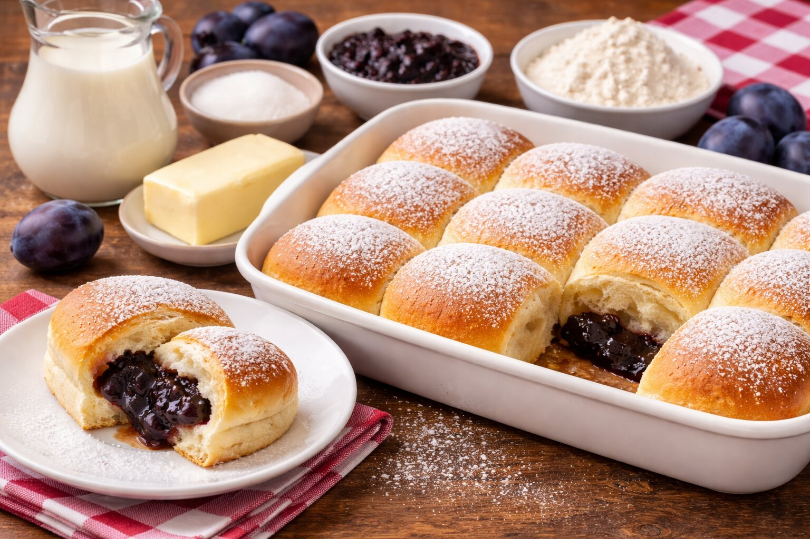

Suroviny
- 500 g hladkej múky
- 250 ml mlieka
- 1 kocka kvasníc (42 g)
- 50 g cukru
- 1 vajce
- 50 g masla
- Slivkový lekvár podľa chuti
Postup
- Mlieko ohrejeme a rozpustíme v ňom kvasnice a cukor.
- Pridáme múku, vajce a roztopené maslo, vymiesime cesto.
- Necháme cesto vykysnúť približne 1 hodinu.
- Tvarujeme buchty, plníme lekvárom a ukladajeme na plech.
- Pečieme 20–25 minút na 180 °C dozlatista.
- Po upečení potrieme maslom.